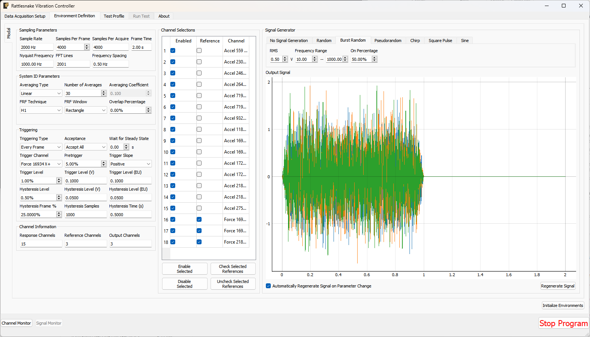
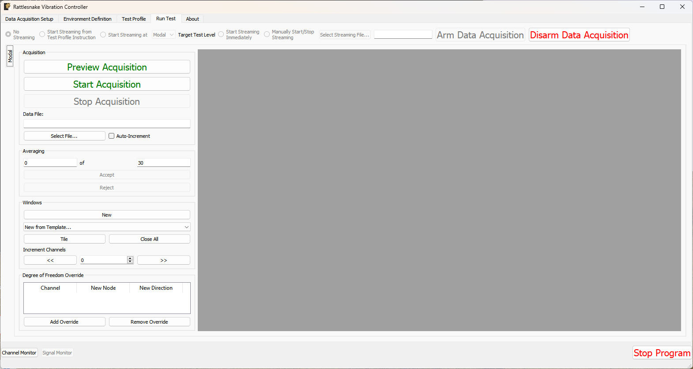
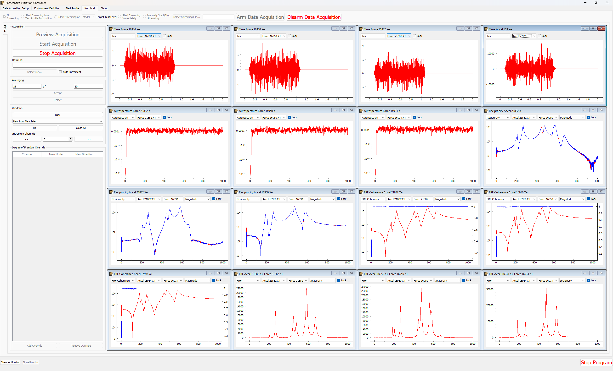
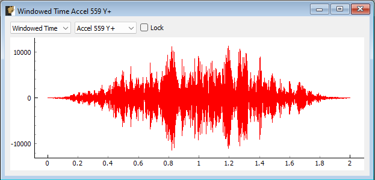

15. Modal Testing
Rattlesnake's most recent environment is the Modal Testing environment, which is designed for dynamic characterization of a test article. The environment computes transfer functions between a subset of reference channels and the remaining response channels. Reference channels are traditionally measurements of the forces applied to the structure using either a modal impact hammer or modal shaker. The modal testing environment can generate many standard modal signals such as chirp or burst random. However, shaker signals can also be generated from other environments using Rattlesnake's combined environments capabilities.
15.1. Defining the Modal Testing Environment in Rattlesnake
The Rattlesnake Modal Testing environment has many signal processing parameters to specify when setting up the modal test. These are defined on the \inlineCode{Environment Definition} tab in the Rattlesnake controller on a sub-tab corresponding to the name of the modal testing environment. Figure 15-1 shows a Modal Testing sub-tab. The following subsections describe the parameters that can be specified, as well as their effects on the analysis.

Figure 15-1. GUI used to define a Modal Testing Environment
15.1.1. Sampling Parameters
The \inlineCode{Sampling Parameters} section contains information and settings that pertain to the samping in the modal test. It consists of the following parameters:
- Sample Rate: The global sample rate of the data acquisition system. This is set on the \inlineCode{Data Acquisition Setup} tab, and displayed here for convenience as a read-only value.
- Samples Per Frame: The number of time samples used in each measurement frame. Modifying this value will change the length of the measurement, as well as the frequency spacing of the spectral data.
- Samples Per Acquire: The number of additional samples required per measurement frame when taking into account overlapping of the measurement frames. This is a computed quantity presented for convenience, so the user cannot modify it directly.
- Frame Time: The amount of time it takes to measure a frame of data, in seconds. This is a computed quantity presented for convenience, so the user cannot modify it directly.
- Nyquist Frequency: The maximum bandwidth of the measurement given the sample rate. This is the largest frequency value in the \Ac{FFT}. This is a computed quantity presented for convenience, so the user cannot modify it directly.
- FFT Lines: The number of frequency lines in the \Ac{FFT}. This is a computed quantity presented for convenience, so the user cannot modify it directly.
- Frequency Spacing: The frequency resolution of the \Ac{FFT}. This is a computed quantity presented for convenience, so the user cannot modify it directly.
15.1.2. System ID Parameters
The \inlineCode{System ID Parameters} section contains information and settings that pertain to the computation of spectral quantities in the Modal Testing Environment. This section contains the following parameters:
- Averaging Type: The type of averaging used to compute the spectral quantities. Linear averaging weights each measurement frame equally. Exponential averaging weights more recent frames more heavily.
- Number of Averages: The number of averaged measurement frames used to compute the spectral quantities.
- Averaging Coefficient: If Exponential Averaging is used, this is the weighting of the most recent frame compared to the weighting of the previous frames. If the averaging coefficient is , then the most recent frame will be weighted , the frame before that will be weighted , the frame before that will be , etc.
- FRF Technique: The estimator used to compute transfer functions between voltage signals and responses.
- FRF Window: The window function used to reduce leakage in the \Ac{FFT} calculation.
- Overlap Percentage: The overlap percentage between measurement frames when computing spectral quantities.
- Window value at frame end: For an exponential window, the value of the window function at the end of the measurement frame. This value will determine how quickly the exponential window decays. This parameter is only visible when an exponential window is selected.
15.1.3. Triggering
The \inlineCode{Triggering} section contains information and settings that pertain to triggering each measurement frame using a measured signal. The parameters are:
- Triggering Type: The type of triggering used for a test. If \inlineCode{Free Run} is selected, all data will be acquired immediately. This is useful for Random, Pseudorandom, or Chirp signals. If \inlineCode{First Frame} is selected, the software will wait for a trigger to occur before the first frame is measured, but subsequent frames will be measured immediately. This setting is useful for Burst Random excitation, where the first frame must be synchronized with the excitation signal, but because the excitation is the same length as the frame, subsequent frames will automatically be aligned with the excitation. If \inlineCode{Every Frame} is selected, a trigger will be required every measurement frame. This is useful for Impact Hammer testing, where there may be an unknown amount of time between hammer impacts.
- Acceptance: If \inlineCode{Accept All} is selected, all measurement frames will be automatically accepted. If \inlineCode{Manual} is selected, the user will have the option to accept or reject measurements. If \inlineCode{Autoreject...} is selected, the user will be prompted to load in a Python function that will accept the time history measurement for the given measurement frame and return a True or False depending on whether or not the frame should be accepted or rejected. This could be used to automatically reject a signal if, for example, there were a double hit or if the peak level were not correct.
- Wait for Steady State: This parameter specifies a time to wait before acquiring measurements to allow the system to come to steady state. This is useful for signals that assume steady state response, such as Sinusoid, Pseudorandom, or Chirp excitation.
- Trigger Channel: This parameter selects the channel used to trigger the measurement.
- Pretrigger: This parameter specifies how much of the measurement frame occurs prior to the trigger. This is useful to allow the entire signal to be measured, as a portion of the trigger signal often occurs before the trigger actually occurs.
- Trigger Slope: This parameter specifies the slope of the signal used to find the trigger. A value of \inlineCode{Positive} means that the trigger will occur when the signal is below the trigger level and then goes above the trigger level. A value of \inlineCode{Negative} means that the trigger will occur when the signal is above the trigger level and then goes below the trigger level.
- Trigger Level: The level of the trigger as a percentage of the full range of the channel.
- Trigger Level (V): The level of the trigger in volts.
- Trigger Level (EU): The level of the trigger in Engineering Units. These are the units specified in the channel table based on the sensitivity of the channel specified in the channel table.
- Hysteresis Level: The Hysteresis level is the level below which the trigger must return prior to another trigger being able to be accepted. This can be used to ensure that the trigger signal returns to some nominal state (e.g. zero force) before another trigger can be acquired.
- Hysteresis Level (V): The Hysteresis Level of the trigger signal in volts.
- Hysteresis Level (EU): The Hysteresis level of the trigger signal in Engineering Units. These are the units specified in the channel table based on the sensitivity of the channel specified in the channel table.
- Hysteresis Frame %: The percentage of the measurement frame that must be below the Hysteresis level before another trigger can be accepted. This is useful for Burst Random or Hammer excitation where the signal should return to zero for some portion of the frame prior to a trigger being acquired. Without this parameter, a trigger could occur in the middle of a Burst, depending on when the acquisition starts up relative to the output.
- Hysteresis Samples: The number of samples that the trigger signal must be below the Hysteresis Level.
- Hysteresis Time: The amount of time the trigger signal must be below the Hysteresis Level.
15.1.4. Channel Information
The \inlineCode{Channel Information} section contains information regarding how many channels are active for the given test. These quantities are read-only to inform the user about the number of channels the current setup will contain.
- Response Channels: The number of response channels in the measurement. These will be compared against the reference channels to compute frequency response functions.
- Reference Channels: The number of reference channels in the measurement.
- Output Channels: The number of output channels that will be present in the test. If used as shaker drives, this value should generally match the number of \inlineCode{Reference Channels}. For a hammer test, this value may be zero.
15.1.5. Channel Selections
The \inlineCode{Channel Selections} section contains a list of all of the channels in the test and the ability to select which channels are references or responses, as well as to enable or disable channels.
To disable a channel, simply uncheck the checkbox in the \inlineCode{Enabled} column associated with a given channel. Disabling a voltage channel associated with a \inlineCode{Feedback Device} and \inlineCode{Feedback Channel} on the channel table will also disable that output.
To make a channel a reference channel, simply check the checkbox in the \inlineCode{Reference} column associated with a given channel. This will turn the channel from a Response channel to a Reference channel.
Multiple rows of the \inlineCode{Channel Selctions} table can be selected at once. The \inlineCode{Enable Selected} and \inlineCode{Disable Selected} buttons will enable or disable all selected channels, respectively. Similarly, the \inlineCode{Check Selected References} and \inlineCode{Uncheck Selected References} buttons will turn the selected channels into Reference Channels or Response Channels, respectively.
15.1.6. Signal Generator
The \inlineCode{Signal Generator} section contains the parameters to determine what signal will be generated for the modal test. The tabs at the top of the \inlineCode{Signal Generator} section determine the type of signal that will be applied. Each signal type may have different parameters to define it.
-
No Signal Generation: No signal will be generated if this is selected.
-
Random: A True Random signal will be generated. This signal is continually generated, and being random, will not repeat for each measurement frame. Generally a window function such as a Hann window should be used with a Random signal.
- RMS: Sets the RMS voltage level for the output signal
- Frequency Range: Sets the minimum and maximum content of the signal
-
Burst Random: A Burst Random signal will be generated. A Burst Random signal is essentially a Random signal that shuts off part of the way through a measurement frame. This signal is continually generated, and being random, will not repeat for each measurement frame. When using a Burst Random excitation, users will generally want to set up a \inlineCode{First Frame} trigger on a voltage channel with a \inlineCode{Hysteresis Frame %} of approximately half the time the burst will be "off".
- RMS: Sets the RMS voltage level for the output signal. The RMS level here describes the level when the burst is active.
- Frequency Range: Sets the minimum and maximum content of the signal
- On Percentage: Sets the fraction of the measurement frame that the burst will be active for. The rest of the measurement frame, the signal will be zero.
-
Pseudorandom: A Pseudorandom signal will be generated. This is a signal that appears random, but is actually deterministically constructed from the frequency lines of the FFT with randomized phases. This signal will repeat for each measurement frame. When using Pseudorandom excitation, users should set the \inlineCode{Wait For Steady State} parameter to ensure the system has reached steady state prior to acquiring data. Pseudorandom excitation will generally not work well with multiple shaker excitation.
- RMS: Sets the RMS voltage level for the output signal
- Frequency Range: Sets the minimum and maximum content of the signal
-
Chirp A Chirp signal will be generated. A Chirp is a fast sine sweep between two frequency values. This signal will repeat for each measurement frame. When using Chirp excitation, users should set the \inlineCode{Wait For Steady State} parameter to ensure the system has reached steady state prior to acquiring data. Chirp excitation will generally not work well with multiple shaker excitation.
- Peak Level: Sets the peak voltage level for the output signal
- Frequency Range: Sets the start and end frequencies of the Chirp
-
Square Pulse: A square pulse wave will be generated. This wave is useful for triggering other test hardware, such as an automatic hammer.
- Peak Level: Sets the peak voltage level for the output signal
- Frequency: Sets the frequency of the square pulse. The period of the square pulse can be longer than one measurement frame.
- Percent On: Sets the percentage of the period of the square wave that the signal is "up".
-
Sine: A sine pulse wave will be generated. This is useful for characterizing a single frequency line or for performing rigid body checkouts. Be careful when selecting a frequency to ensure there is no leakage at that frequency line.
- Peak Level Sets the peak voltage level for the output signal
- Frequency Sets the frequency of the sine wave
The selected signal will be plotted in the \inlineCode{Output Signal} plot, which will give the user an idea of what the signal looks like. If the \inlineCode{Automatically Regenerate Signal on Parameter Change} checkbox is checked, the signal should update automatically when different parameters are selected. If not, the user can press the \inlineCode{Regenerate Signal} button to regenerate the signal. For random signals, the \inlineCode{Regenerate Signal} button can also be used to visualize different realizations of the random signal.
15.2. Running a Modal Test
The Modal Testing Environment is then run on the \inlineCode{Run Test} tab of the controller. With the data acquisition system armed, the \ac{GUI} initially looks like Figure 15-2. This screen looks rather empty, but users can populate it with functions of their choice, as shown in Figure 15-3.

Figure 15-2. Empty GUI to run a modal test in Rattlesnake.
Figure 15-3. GUI to run a modal test in Rattlesnake populated with several data plots.
15.2.1. Acquisition
The \inlineCode{Acquisition} portion of the window contains controls for starting and stopping the measurement, as well as saving modal data to a file. See Section 15.3 Output NetCDF File Structure for a description of the file format.
- Preview Acquisition: Clicking the \inlineCode{Preview Acquisition} button will start the measurement running continuously, so the user can preview it and make sure it looks correct. Data will not be saved to disk, nor will the acquisition automatically stop after the specified number of measurement frames have been acquired.
- Start Acquisition: Clicking the \inlineCode{Start Acquisition} button will start the measurement running. Data will be stored to disk in the file specified in the \inlineCode{Data File:} box, and the acquisition will automatically stop when the specified number of averages has been acquired.
- Stop Acquisition: Clicking the \inlineCode{Stop Acquisition} button will stop the current measurement. Data already written to disk will remain on disk.
- Data File: The \inlineCode{Data File:} box displays the file name that the modal data will be written to. See Section \ref{sec:rattlesnake_environments_modal_output_files} for a description of the file format.
- Select File...: The \inlineCode{Select File...} button allows the user to select a file to use to save the modal data to disk.
- Auto-Increment: If this checkbox is checked, a four-digit number will be appended to the file name, and will be incremented for each run. This can be used to prevent accidentally overwriting data that has already been acquired.
15.2.2. Averaging
The \inlineCode{Averaging} portion of the window displays the current number of measurement frames that have been acquired, as well as the total number of measurement frames that are to be acquired. If \inlineCode{Acceptance} is set to \inlineCode{Manual}, then the \inlineCode{Accept} and \inlineCode{Reject} buttons will become available after each measurement frame is acquired, which will allow the users to manually accept or reject a measurement frame.
If the measurement was started using the \inlineCode{Start Acquisition} button, the measurement will stop automatically when the current number of measurement frames is equal to the total number of measurement frames. If \inlineCode{Preview Acquisition} was used, then the measurement will continue until stopped with the \inlineCode{Stop Acquisition} button.
15.2.3. Windows
The \inlineCode{Windows} portion of the screen allows the user to customize the data that they visualize during the test.
- New: Clicking the \inlineCode{New} button will create a new window on the right-hand side of the screen.
- New from Template...: The \inlineCode{New from Template...} drop down menu allows users to visualize common data types for modal testing.
- Drive Point (Magnitude): Rattlesnake will parse the channel names in the channel table to identify drive point \Ac{FRF}s, of which it will display the magnitude. This will create one window for each drive point \Ac{FRF}.
- Drive Point (Imaginary): Rattlesnake will parse the channel names in the channel table to identify drive point \Ac{FRF}s, of which it will display the imaginary part. This will create one window for each drive point \Ac{FRF}. For an acceleration to force \ac{FRF}, the imaginary part of the drive point \ac{FRF} should always be positive if both channels reference and response channels have polarity of + or -, or negative if one of the reference or response channels has a polarity of + and the other has a polarity of -. If the imaginary part of the drive point \inlineCode{FRF} crosses zero there could be an issue with the test setup.
- Drive Point Coherence: Rattlesnake will parse the channel names in the channel table to identify drive point \Ac{FRF}s which it will display with the coherence overlaid. This will create one window for each drive point \Ac{FRF}.
- Reciprocity: Rattlesnake will parse the channel names in the channel table to identify reciprocal \ac{FRF}s to overlay. It will find, for example the \ac{FRF} with input at degree of freedom \inlineCode{A} and response at degree of freedom \inlineCode{B} and overlay it with the \ac{FRF} with input at \inlineCode{B} and response at \inlineCode{A}. It will generally create windows where is the number of drive points in the measurement.
- Reference Autospectrum: Rattlesnake will plot the autospectrum for each reference channel in the test. Users can use this plot to ensure adequate excitation over the bandwidth of interest. It will generate one window per each reference channel in the test.
- 3x3 Channel Grid: Rattlesnake will create 9 windows which by default display time histories for the first 9 channels in the test. This selection, combined with setting the \inlineCode{Increment Channels} selector to 9, can be used to quickly look through all of the channels in the test.
- Tile: Clicking the \inlineCode{Tile} button will tile all data display windows across the space available in the Rattlesnake \ac{GUI}.
- Close All: Clicking this button will close all data display windows that are currently open.
- Increment Channels: If a value is set in the \inlineCode{Increment Channels} selector, then when the \inlineCode{<<} or \inlineCode{>>} buttons are clicked, all of the response channels in all of the windows that are not locked will decrement or increment by that number. This can be used to quickly look through all channels in a test without having to change the channel in each window manually. For display windows with multiple channels, this will increment only the response channel. The reference channel must be set manually.
15.2.3.1. Window Types
Windows created in the \inlineCode{Run Test} tab of a Modal Testing environment are flexible in that they can show multiple different types of data in various formats for any channel in the test. All windows have a \inlineCode{Lock} checkbox that when checked does not allow the channel to change via the \inlineCode{Increment Channels} arrow buttons. A locked channel can still be changed manually, however.
This section will walk through the various window types in a modal test.
15.2.3.2. Time Window
The \inlineCode{Windowed Time} window displays the time trace for a single measurement with the window function applied. This allows users to visualize the affect that the window has on the data. Figure \ref{fig:modalwindowedtimewindow} shows an example of this window. The channel to visualize can be chosen from the drop-down menu. The \inlineCode{Lock} checkbox can be checked to ensure the channel does not change when the \inlineCode{Increment Channels} functionality is utilized.

Figure 15-4. Modal Testing data window showing a channel's windowed time signal.
15.2.3.3. Windowed Time Window
15.2.3.4. Spectrum Window
15.2.3.5. Autospectrum Window
15.2.3.6. FRF Window
15.2.3.7. Coherence Window
15.2.3.8. FRF Coherence Window
15.2.3.9. Reciprocity Window
15.2.4. Degree of Freedom Override
15.3. Output NetCDF File Structure
15.3.1. NetCDF Dimensions
15.3.2. NetCDF Attributes
15.3.3. NetCDF Variables
15.3.4. Saving Modal Data
\subsubsection{Time Window}
The \inlineCode{Time} window displays the time trace for a single measurement frame for the selected channel. Figure \ref{fig:modaltimewindow} shows an example of this window. The channel to visualize can be chosen from the drop-down menu. The \inlineCode{Lock} checkbox can be checked to ensure the channel does not change when the \inlineCode{Increment Channels} functionality is utilized.
\begin{figure}
\centering
\includegraphics[width=0.7\linewidth]{figures/modal_time_window}
\caption{Modal Testing data window showing a channel's time signal.}
\label{fig:modaltimewindow}
\end{figure}
\subsubsection{Spectrum Window}
The \inlineCode{Spectrum} window displays the magnitude of the FFT of the (windowed) time trace for a single measurement. Figure \ref{fig:modalspectrumwindow} shows an example of this window. The channel to visualize can be chosen from the drop-down menu. The \inlineCode{Lock} checkbox can be checked to ensure the channel does not change when the \inlineCode{Increment Channels} functionality is utilized.
\begin{figure}
\centering
\includegraphics[width=0.7\linewidth]{figures/modal_spectrum_window}
\caption{Modal Testing data window showing a channel's spectrum.}
\label{fig:modalspectrumwindow}
\end{figure}
\subsubsection{Autospectrum Window}
The \inlineCode{Autospectrum} window displays the magnitude of the autospectrum for a single measurement. This is an averaged quantity, so it will generally improve as more averages are acquired. Figure \ref{fig:modalspectrumwindow} shows an example of this window. The channel to visualize can be chosen from the drop-down menu. The \inlineCode{Lock} checkbox can be checked to ensure the channel does not change when the \inlineCode{Increment Channels} functionality is utilized.
\begin{figure}
\centering
\includegraphics[width=0.7\linewidth]{figures/modal_autospectrum_window}
\caption{Modal Testing data window showing a channel's autospectrum.}
\label{fig:modalautospectrumwindow}
\end{figure}
\subsubsection{FRF Window}
The \inlineCode{FRF} window displays a \Ac{FRF} for a reference/response channel combination. This is an averaged quantity, so it will generally improve as more averages are acquired. Figure \ref{fig:modalfrfwindow} shows an example of this window. Two channel selection menus exist to select which \ac{FRF} to visualize. The first corresponds to the \inlineCode{Response} channel, and the second corresponds to the \inlineCode{Reference} channel. Channels selected as a Reference on the \inlineCode{Environment Definition} tab will show up in the reference channel selection menu, and channels that were not selected will show up in the response channel selection menu. The \ac{FRF} can be visualized by looking at Real, Imaginary, Magnitude, or Phase parts, or it can be split into two plots to visualize Magnitude and Phase or Real and Imaginary parts simultaneously. The \inlineCode{Lock} checkbox can be checked to ensure the response channel does not change when the \inlineCode{Increment Channels} functionality is utilized.
\begin{figure}
\centering
\includegraphics[width=0.7\linewidth]{figures/modal_frf_window}
\caption{Modal Testing data window showing the FRF between a reference and response channel.}
\label{fig:modalfrfwindow}
\end{figure}
\subsubsection{Coherence Window}
The \inlineCode{Coherence} window displays the coherence for a given channel. Figure \ref{fig:modalcoherencewindow} shows an example of this window. If only a single reference is used, this will be the regular coherence. If multiple references are used, this will then be the Multiple Coherence function. The channel to visualize can be chosen from the drop-down menu. The \inlineCode{Lock} checkbox can be checked to ensure the channel does not change when the \inlineCode{Increment Channels} functionality is utilized.
\begin{figure}
\centering
\includegraphics[width=0.7\linewidth]{figures/modal_coherence_window}
\caption{Modal Testing data window showing a channel's coherence.}
\label{fig:modalcoherencewindow}
\end{figure}
\subsubsection{FRF Coherence Window}
The \inlineCode{FRF Coherence} window displays a \ac{FRF} overlaid with the Coherence plot. This allows users to align drops in coherence with features of the \inlineCode{FRF} to determine if they occur at modes of the structure, which could suggest an issue with the data. Figure \ref{fig:modalfrfcoherencewindow} shows an example of this window. Two channel selection menus exist to select which \ac{FRF} to visualize. The first corresponds to the \inlineCode{Response} channel, and the second corresponds to the \inlineCode{Reference} channel. The coherence will generally correspond to the Response channel: if multiple references exist, then the multiple coherence that is plotted will be a function of the response degree of freedom; if only a single reference exists, then the regular coherence will be with respect to the only reference in the test, and will also then only change when the response is updated. The \ac{FRF} can be visualized by looking at Real, Imaginary, Magnitude, or Phase parts, or it can be split into two plots to visualize Magnitude and Phase or Real and Imaginary parts simultaneously. If these latter options are selected, the coherence will be overlaid on the second plot, which will be the Magnitude or Imaginary part. The \inlineCode{Lock} checkbox can be checked to ensure the response channel does not change when the \inlineCode{Increment Channels} functionality is utilized.
\begin{figure}
\centering
\includegraphics[width=0.7\linewidth]{figures/modal_frfcoherence_window}
\caption{Modal Testing data window showing a channel's FRF overlaid with the coherence.}
\label{fig:modalfrfcoherencewindow}
\end{figure}
\subsubsection{Reciprocity Window}
The \inlineCode{Reciprocity} window displays two reciprocal \ac{FRF}s overlaid. For a linear system, these \ac{FRF}s should be identical to one another. Figure \ref{fig:modalreciprocitywindow} shows an example of this window. Two channel selection menus exist to select which \ac{FRF} to visualize. The first corresponds to the \inlineCode{Response} channel, and the second corresponds to the \inlineCode{Reference} channel. Rattlesnake will automatically go through and find the reciprocal \ac{FRF} for that measurement and overlay it. The \ac{FRF} can be visualized by looking at Real, Imaginary, Magnitude, or Phase parts, or it can be split into two plots to visualize Magnitude and Phase or Real and Imaginary parts simultaneously. The \inlineCode{Lock} checkbox can be checked to ensure the response channel does not change when the \inlineCode{Increment Channels} functionality is utilized.
\begin{figure}
\centering
\includegraphics[width=0.7\linewidth]{figures/modal_reciprocity_window}
\caption{Modal Testing window showing two reciprocal FRFs.}
\label{fig:modalreciprocitywindow}
\end{figure}
\FloatBarrier
\subsection{Degree of Freedom Override}
This section of the Modal Testing \inlineCode{Run Test} tab allows users to override the channel metadata for a given measurement. This is particularly useful for roving hammer or roving accelerometer testing strategies. The node identification number and direction are defined on the channel table on the first tab of the software, and it would be very tedious to need to move back to the first tab to redefine the node number, reinitialize the data acquisition, redefine the environment definition, and finally, rearm the test to take data. Instead, the user can override the degree of freedom information without leaving the \inlineCode{Run Test} tab.
To add an override channel, users can press the \inlineCode{Add Override} button. This will create a new row in the override table. These can be removed by clicking the \inlineCode{Remove Override} button with the particular row in the table selected. Figure \ref{fig:modaldofoverride} shows an example of this functionality where the node information on the force channel has been updated. Note that the windows will also be updated to display this new degree of freedom information.
\begin{figure}
\centering
\includegraphics[width=\linewidth]{figures/modal_dof_override}
\caption{Overriding the 16934 X+ degree of freedom information with 16950 X+ degree of freedom information.}
\label{fig:modaldofoverride}
\end{figure}
\FloatBarrier
\section{Output NetCDF File Structure}\label{sec:rattlesnake_environments_modal_output_files}
When Rattlesnake saves data to a netCDF file, environment-specific parameters are stored in a netCDF group with the same name as the environment name. Similar to the root netCDF structure described in Section \ref{sec:using_rattlesnake_output_files}, this group will have its own attributes, dimensions, and variables, which are described here.
\subsection{NetCDF Dimensions}
\begin{description}
\item[reference\_channels] The number of reference channels in the measurement
\item[response\_channels] The number of response channels in the measurement
\end{description}
\subsection{NetCDF Attributes}
\begin{description}
\item[samples\_per\_frame] The number of samples per measurement frame.
\item[averaging\_type] A string specifying if linear or exponential averaging was performed in the measurement.
\item[num\_averages] The number of averages used to compute spectral quantities like \ac{FRF}s and autospectra.
\item[averaging\_coefficient] If Exponential Averaging is used, this is the weighting of the most recent frame compared to the weighting of the previous frames. If the averaging coefficient is <span class="katex"><span class="katex-html" aria-hidden="true"><span class="base"><span class="strut" style="height:0.4306em;"></span><span class="mord mathnormal" style="margin-right:0.0037em;">α</span></span></span></span>, then the most recent frame will be weighted <span class="katex"><span class="katex-html" aria-hidden="true"><span class="base"><span class="strut" style="height:0.4306em;"></span><span class="mord mathnormal" style="margin-right:0.0037em;">α</span></span></span></span>, the frame before that will be weighted <span class="katex"><span class="katex-html" aria-hidden="true"><span class="base"><span class="strut" style="height:1em;vertical-align:-0.25em;"></span><span class="mord mathnormal" style="margin-right:0.0037em;">α</span><span class="mopen">(</span><span class="mord">1</span><span class="mspace" style="margin-right:0.2222em;"></span><span class="mbin">−</span><span class="mspace" style="margin-right:0.2222em;"></span></span><span class="base"><span class="strut" style="height:1em;vertical-align:-0.25em;"></span><span class="mord mathnormal" style="margin-right:0.0037em;">α</span><span class="mclose">)</span></span></span></span>, the frame before that will be <span class="katex"><span class="katex-html" aria-hidden="true"><span class="base"><span class="strut" style="height:1em;vertical-align:-0.25em;"></span><span class="mord mathnormal" style="margin-right:0.0037em;">α</span><span class="mopen">(</span><span class="mord">1</span><span class="mspace" style="margin-right:0.2222em;"></span><span class="mbin">−</span><span class="mspace" style="margin-right:0.2222em;"></span></span><span class="base"><span class="strut" style="height:1.0641em;vertical-align:-0.25em;"></span><span class="mord mathnormal" style="margin-right:0.0037em;">α</span><span class="mclose"><span class="mclose">)</span><span class="msupsub"><span class="vlist-t"><span class="vlist-r"><span class="vlist" style="height:0.8141em;"><span style="top:-3.063em;margin-right:0.05em;"><span class="pstrut" style="height:2.7em;"></span><span class="sizing reset-size6 size3 mtight"><span class="mord mtight">2</span></span></span></span></span></span></span></span></span></span></span>, etc.
\item[frf\_technique] A string representing the estimator used to compute \ac{FRF}s, e.g. H1, H2, Hv.
\item[frf\_window] A string representing the window function used when computing \ac{FRF}s.
\item[overlap] The overlap fraction between measurement frames.
\item[trigger\_type] A string representing the type of triggering used in the modal test (e.g. Free Run, First Frame, Every Frame).
\item[accept\_type] A string representing the acceptance type used in the modal test (e.g. Accept All, Manual).
\item[wait\_for\_steady\_state] The amount of time the measurement needed to wait for steady state to occur before acquiring data.
\item[trigger\_channel] An integer representing the channel used to trigger the measurement.
\item[pretrigger] The amount of the measurement frame that occurs prior to the trigger.
\item[trigger\_slope\_positive] An integer equal to 1 if the slope was positive and 0 if the slope was negative.
\item[trigger\_level] The level that was used to trigger the system as a fraction of the total range of the channel.
\item[hysteresis\_level] The level that the data must return back to prior to being able to accept another trigger as a fraction of the total range of the channel.
\item[hysteresis\_length] The length of time that a channel must return to the hysteresis level prior to being able to accept another trigger as a fraction of the measurement frame length.
\item[signal\_generator\_type] The type of signal being generated by the modal test
\item[signal\_generator\_level] The signal level, which could be a peak value for signals such as a sine wave, or an \ac{RMS} value for random signals
\item[signal\_generator\_min\_frequency] The minimum frequency of the excitation signal
\item[signal\_generator\_max\_frequency] The maximum frequency of the excitation signal
\item[signal\_generator\_on\_fraction] The percent of time that a square wave is ``up'' or a burst random is ``active''.
\item[exponential\_window\_value\_at\_frame\_end] The value of the exponential window function at the end of the measurement frame, used to set the strength of the exponential window.
\item[acceptance\_function] If the system is set to automatically reject a measurement, this is the script and function name used to evaluate that signal.
\end{description}
\subsection{NetCDF Variables}
\begin{description}
\item[reference\_channel\_indices] The indices into the channel table that correspond to the reference channels. Type: 32-bit int; Dimensions: \inlineCode{reference_channels}
\item[response\_channel\_indices] The indices into the channel table that correspond to the response channels. Type: 32-bit int; Dimensions: \inlineCode{response_channels}
\end{description}
\subsection{Saving Modal Data}
In addition to time streaming, Rattlesnake's Modal Testing environment will also save bespoke modal data files directly to the disk when a test is started with the \inlineCode{Start Acquisition} button. The computed spectral quantities such as \ac{FRF} and coherence data are in a NetCDF file, and are updated at each average. Time data is also stored to this file, but only the time data that is used for spectral computations. For example, if a hammer test is being performed and the user takes a minute to evaluate the data before accepting or rejecting the measurement frame, that time data measured during that pause will not be stored to the modal data file; however, it would be stored to the streaming data file described in Section \ref{sec:using_rattlesnake_output_files}, which is essentially an open-tape measurement.
The additional dimension is:
\begin{description}
\item[fft\_lines] The number of frequency lines in the spectral quantities.
\end{description}
There are also several additional variables to store the spectral data:
\begin{description}
\item[frf\_data\_real] The real part of the most recently computed value for the transfer functions between the reference signals and the response signals. NetCDF files cannot handle complex data types so real and imaginary parts are split into two variables. Type: 64-bit float; Dimensions: \inlineCode{fft_lines} <span class="katex"><span class="katex-html" aria-hidden="true"><span class="base"><span class="strut" style="height:0.6667em;vertical-align:-0.0833em;"></span><span class="mord">×</span></span></span></span> \inlineCode{response_channels} <span class="katex"><span class="katex-html" aria-hidden="true"><span class="base"><span class="strut" style="height:0.6667em;vertical-align:-0.0833em;"></span><span class="mord">×</span></span></span></span> \inlineCode{reference_channels}
\item[frf\_data\_imag] The imaginary part of the most recently computed value for the transfer functions between the excitation signals and the control response signals. NetCDF files cannot handle complex data types so real and imaginary parts are split into two variables. Type: 64-bit float; Dimensions: \inlineCode{fft_lines} <span class="katex"><span class="katex-html" aria-hidden="true"><span class="base"><span class="strut" style="height:0.6667em;vertical-align:-0.0833em;"></span><span class="mord">×</span></span></span></span> \inlineCode{response_channels} <span class="katex"><span class="katex-html" aria-hidden="true"><span class="base"><span class="strut" style="height:0.6667em;vertical-align:-0.0833em;"></span><span class="mord">×</span></span></span></span> \inlineCode{reference_channels}
\item[coherence] The multiple or regular coherence of the channels computed during the test, depending on if there are multiple references or a single reference, respectively. Type: 64-bit float; Dimensions: \inlineCode{fft_lines} <span class="katex"><span class="katex-html" aria-hidden="true"><span class="base"><span class="strut" style="height:0.6667em;vertical-align:-0.0833em;"></span><span class="mord">×</span></span></span></span> \inlineCode{response_channels}
\end{description}